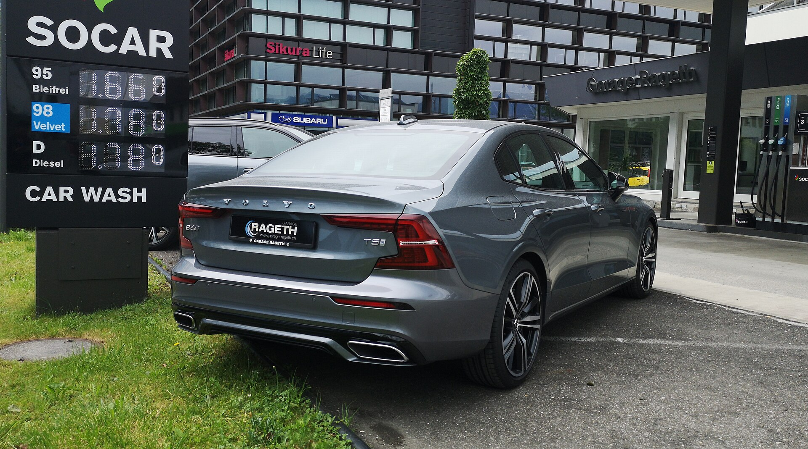
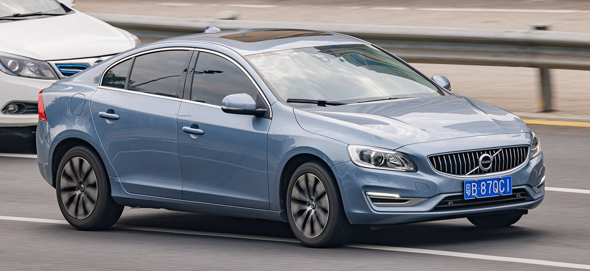
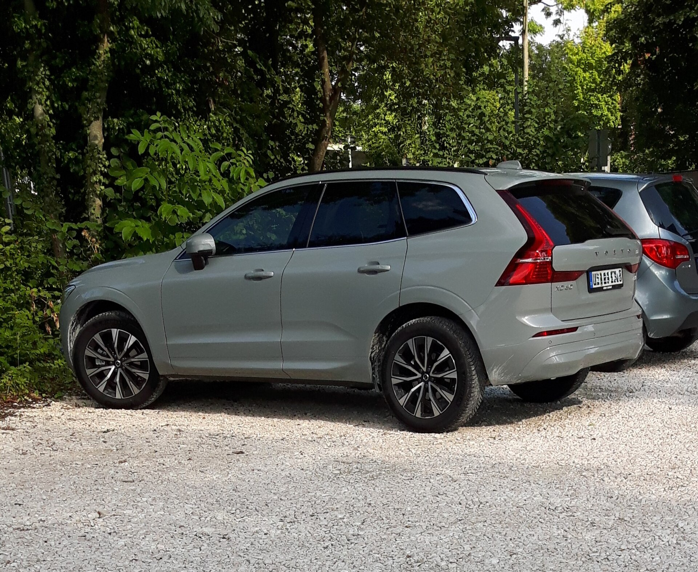

Latest edit

Modern Volvo culture / cinematic media
Built from a 2016 Volvo S60L and a 2017 Volvo XC60 T6 to show that Volvos can be aggressive, cinematic, luxurious, and unique.
SXC60S showcases channel videos, photography, edits, community highlights, and upcoming meets across Instagram, YouTube, TikTok, and Facebook. It is more than a channel. It is a growing Volvo community built around cinematography, original builds, and the people who make the scene feel different.
Featured media

Latest edit

Short form

Photo set
Garage
The sedan side of SXC60S: clean, low, sharp, and made for nighttime rolling shots with an executive edge.
The performance SUV side: confident, practical, and uncommon in a scene where standing out matters.
Community
Upcoming gatherings will spotlight local Volvo builds, photo sessions, rollers, and community edits. The goal is simple: bring modern Volvo owners together and make the scene look as premium as it feels.
YouTube premiere and short-form clips across all socials.
Build showcases, photography, community features, and recap film.
Send your Volvo build for a chance to be featured by SXC60S.
Find the channel
Follow the footage where it drops.